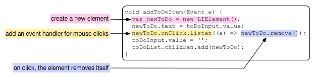
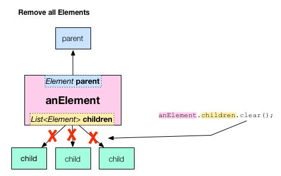

删除 DOM 元素
动态的从网页删除元素。
该教材演示如何从 DOM 中删除元素。 从 前一教程 的 待办事项列表应用改进后的应用支持一次 删除一个条目或者一次 删除所有待办事项条目。
玩一玩该应用
下面是前一教程中的 待办事项应用 增强版，可以 删除待办事项条目。
动手试试！ 在输入框中输入文字然后按回车键会 在 list 中添加一个新的条目。 继续添加多少条目。 然后把鼠标放到其中一个条目上， 该条目会变为红色并且稍微有点变大了。 点击条目会从列表中删除它。 使用 Delete All 按钮从 列表中删除所有的待办事项条目。
下面的内容将详细 介绍该教程中的 关键代码。 特别是在 Dart 代码中 如何删除一个或者多少 DOM 元素， 以及如何用 CSS 规则来改变 文字颜色并放大文字。
当鼠标在一个元素上方的时候改变元素的外观
如上所示，当鼠标放到一个 list 条目的时候， 该条目会变大并且文字变为红色。 同时鼠标指针的形状也发生了变化。 该视觉提示是用户界面体验非常重要的组成部分。 在该示例中，提示用户当 点击列表条目的时候 会有情况发生。
该行为通过 todo_with_delete 应用中的 CSS 规则实现的：
#to-do-list li:hover {
color: red;
font-size: 18px;
cursor:pointer;
}
我们使用该 CSS 技巧来 替代常规的用户界面， 这样可以保持代码比较 简洁。
从 DOM 树中删除一个元素
当从一个元素的父节点中删除它的时候， 该元素就从 DOM 树中删除了。 List 类提供了从列表中查找并删除一个元素 的功能。 但是在这里，用 element 的 remove() 函数 更加短小清晰。

在 todo_with_delete 应用中， 用户通过点击一个列表条目来删除它。 该功能由一行 Dart 代码实现。 当创建一个新的列表条目的时候， 同时注册了一个鼠标点击事件监听器。 当用户在该条目上点击鼠标的时候， 事件监听器会调用该 元素的 remove() 函数来从 DOM 树中删除它。

当一个元素从 DOM 树中把自己删除了， 浏览器会重新渲染该页面， 然后该元素就从网页上消失了。
删除一个元素的所有子元素
当用户点击 Delete All 按钮时， 所有的列表条目都会被删除。

在上面示例中使用 List 类 的 clear() 函数。 下面是 todo_with_delete 应用中实现 Delete All 按钮的代码。
-
该 HTML 代码创建了一个 ID 为 delete-all 的按钮。 (并且直接设置了 CSS 样式。)
<button id="delete-all" type="button" style="float:right"> Delete All </button>
-
Dart 代码用 querySelectorAll 函数（参数为 #delete-all ）从 DOM 中 找到该按钮。 然后在按钮上注册一个鼠标点击事件监听器， 该监听器把列表中的所有子元素都删除了。 下面是 Delete All 按钮相关的所有 Dart 代码。

关于函数表达式和 =>
todo_with_delete 应用使用了一些 有趣的 Dart 语法来添加 Delete All 按钮的事件监听器。 listen() 函数的参数是一个 function expression 函数表达式 ， 函数表达式是定义函数的缩写方式， 并使用 => 语法来简洁的定义函数。
上面的代码等价于如下代码：
deleteAll.onClick.listen((e) {
toDoList.children.clear();
});
或者如下代码：
...
void main() {
...
deleteAll.onClick.listen(deleteAllElements);
}
void deleteAllElements(Event e) {
toDoList.children.clear();
}
...
函数表达式通常用于在一个 元素上注册事件监听器。 当注册事件监听器的时候， 该函数必须为一个 EventListener， 也就是说该函数类型要接受 一个 Event 对象作为参数并没有 返回值。
其他资源
- Dart: Up and Running 是覆盖了 Dart 语言、库和工具的一本书。
接下来干啥？
-
下一个教程， 安装共享包， 告诉你如何使用其他人编写并共享的代码。
-
其中一个包为 Polymer.dart， 该包支持一些功能是操作 DOM 更加方便，例如 数据绑定、模板以及声明式事件监听器。 通过 定义自定义 Element 来了解 Polymer。